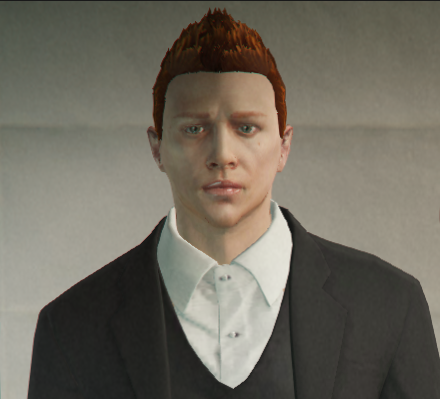

Historia
Hej, jestem Tomek Draż od dzieciństwa interesowałem się programowaniem i graniem.
Wywołałem się w Polsce, gdzie nauczyłem się programować w wieku 20 lat wróciłem do mojej.
Ojczyzny dzięki moim umiejętnością dostałem się do PD, gdzie służyłem do czasu, kiedy moja partnerka.
Z patrolu nie zachorowała, a ja nie rzuciłem wszystkiego by ją ratować niestety mimo moich starań nie udało się.
Kiedy byłem spłukany, ponieważ wszystkie środnik przeznaczyłem na ratowanie przyjaciółki.
Postanowiłem wykorzystać moje umiejętności i założyć Duudle.Teraz ty możesz z nami tworzyć dalszą historie.